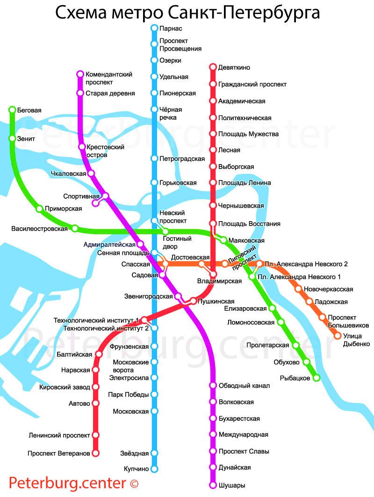

История Санкт-Петербургского метро началась еще в 1820 году. Тогда инженер Торгованов представил Александру I проект строительств тоннеля под Невой. Но тогда строительство так и не было начато — о проекте на какое-то время забыли, а вспомнили тогда, когда метро стало появляться в Париже, Лондоне и других городах.
Первые шаги к строительство Петербургского метрополитена
В 1935 году в Москве была открыта первая линия метро, а в 1941 году очередь, наконец-то, дошла и до Санкт-Петербурга. Был организован Ленинградский метрострой и дело пошло — метро начало проектироваться, подземки стали изучаться и казалось, что скоро и в Петербурге появится свое метро. Но о планах пришлось на время забыть — началась война. Только в 1947 году началось официально строительство долгожданного метрополитена.
Долгожданное открытие метро
На строительство первой ветки ушло 10 лет. В 1955 году была открыта первая ветка Санкт-Петербургского метро. В ее состав вошли Площадь Восстания, Владимирская, Технологический институт, Балтийская, Нарвская, Кировский завод и Автово. А немного позже открылась и Пушкинская. Жители Северной столицы теперь могли легко добраться на метро до Витебского, Балтийского и Варшавского вокзалов.
Но, несмотря на этом строители не остановились, а продолжили работать. Первую линию продлили в сторону центра, и теперь через новую станцию Чернышевская и Площадь Ленина можно было доехать и до Финляндского вокзала.
Большинство первых станций оформлялись в привычном тогда стиле Сталинской архитектуры.
